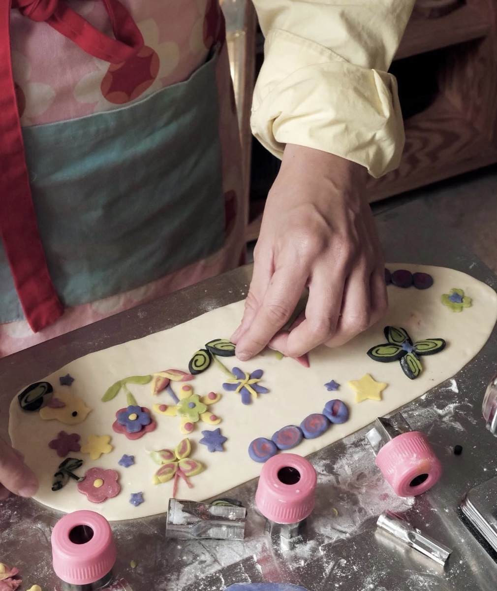
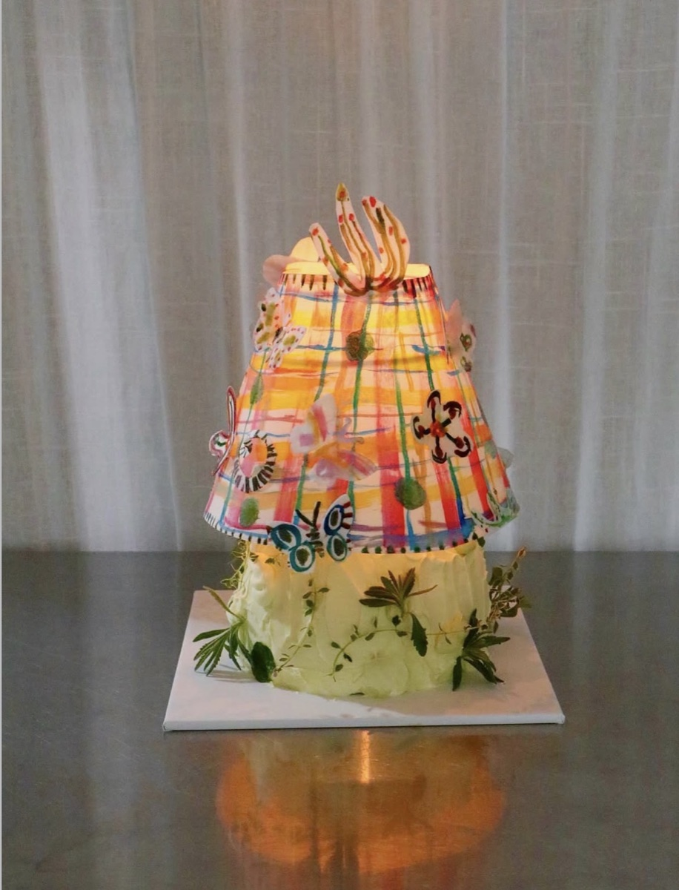
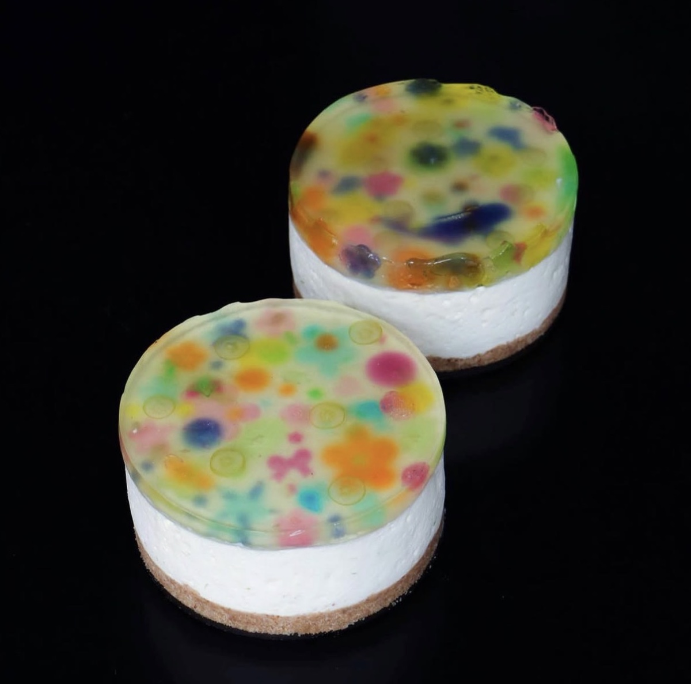
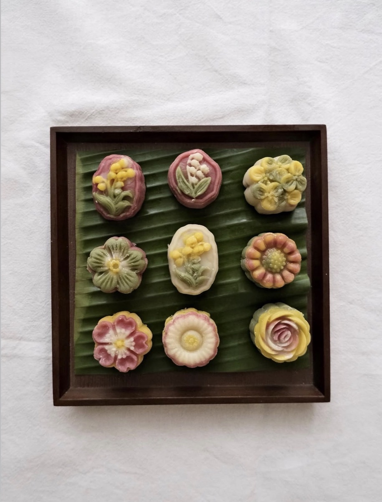
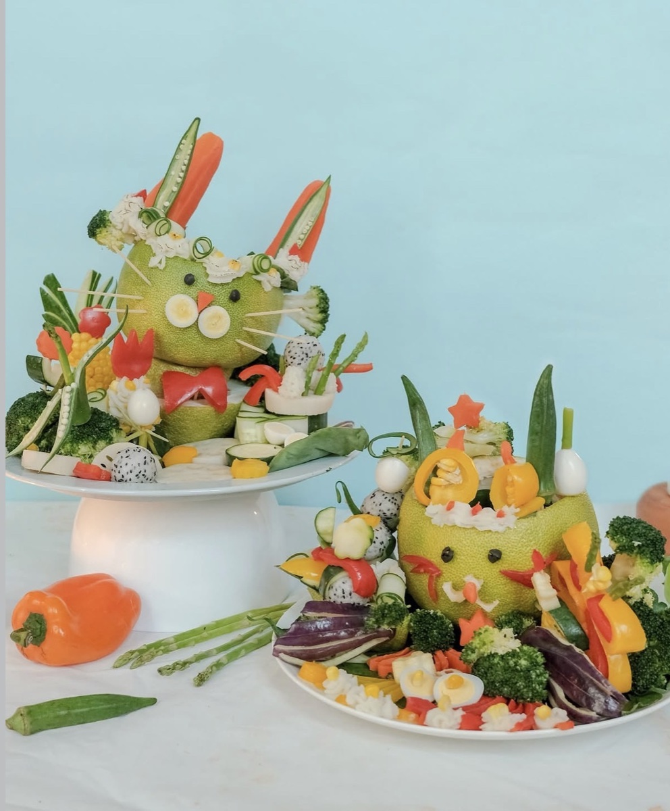
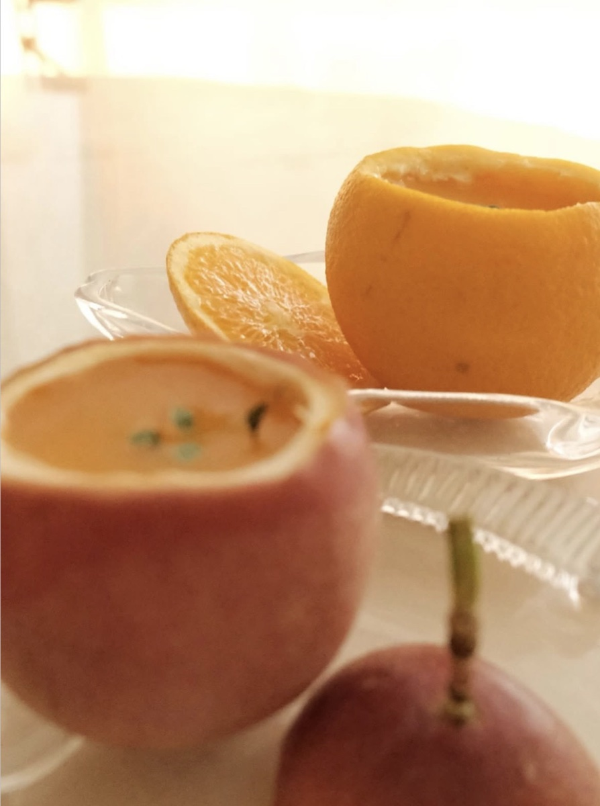
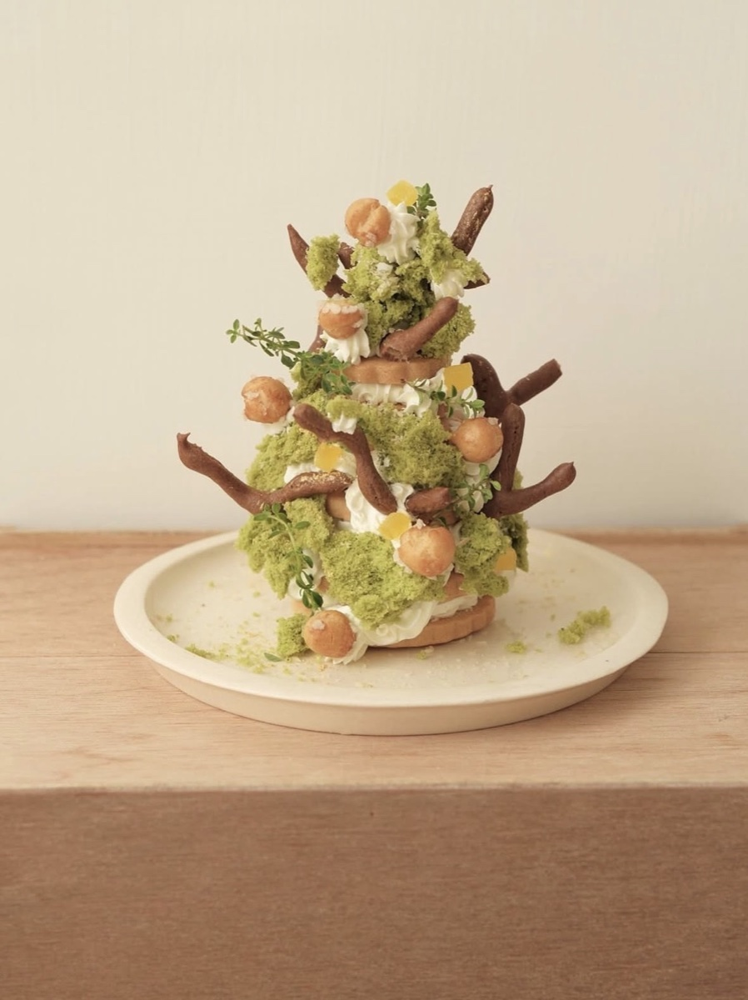
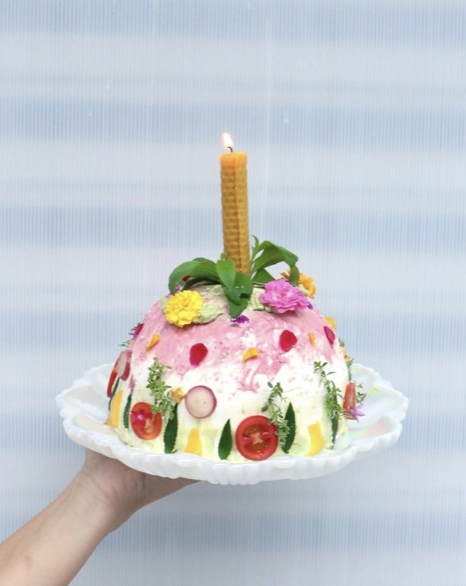

PAST PROJECTS
合作過的親子食物・工作坊

春神來了元寶寶起床了
與 FU Food 福福・于寧 合作
捏一顆顆象徵招財納福的元寶餃子，在春天的餐桌上，包進對新一年的期待。

翩翩飛舞的春日花園
與 FU Food 福福・于寧 合作
在花園裡裝飾鮮奶油蛋糕，用糯米紙畫一盞小燈罩，讓春天在手心裡翩翩飛舞。

夏日閃閃寶石派對
與 FU Food 福福・于寧 合作
闖入海底的寶石派對，捏出晶亮的果凍蛋糕，再親手捲一根祝福蠟燭，迎接夏天的光。

艾之島
端午・與 FU Food 福福・于寧 合作
揉進艾草香氣，捏出魚兒與花朵形狀的草仔粿，再煮一碗花花紅豆湯圓，迎接初夏。

月亮圓圓月餅甜甜
中秋親子工作坊
壓製冰皮月餅，包進紅豆與芋頭的香甜，在月圓的夜裡，捏出屬於自己的團圓滋味。

秋月玉兔花園
中秋・與 FU Food 福福・于寧 合作
用刀具把秋天的豐收蔬果，雕刻成花園裡的小小雕塑，向月亮與玉兔說聲中秋快樂。

大吉大利迎新年
與 細蒂 合作
捧著金黃甜橙與百香果，攪拌出暖暖的慕斯，寫下對新年的祝福，貼在家門口。

冬日發光樹
與 maison kami 合作
擠上奶油、疊上餅乾與泡芙，做出一棵會發光的樹，把冬日的溫暖悄悄點亮。

冬日蘋果寶石
與 FU Food 福福・于寧 合作
冬日裡的紅寶石蘋果蛋糕，插上親手捲成的蜂蠟蠟燭，點亮銀白世界裡的一份暖意。